這是 Dirac Live 電腦版的「調教篇」——重點不在怎麼測量（基礎篇已教），而在測完之後那條頻率曲線要怎麼調，以及付費升級值不值得。示範為 NAD 系列（N10 串流綜擴、C658 串流 DAC/前級）＋ MiniDSP UMIK-1 麥克風。
先搞懂：要不要付費升級？
1
99 美金升級＝校正頻寬全開
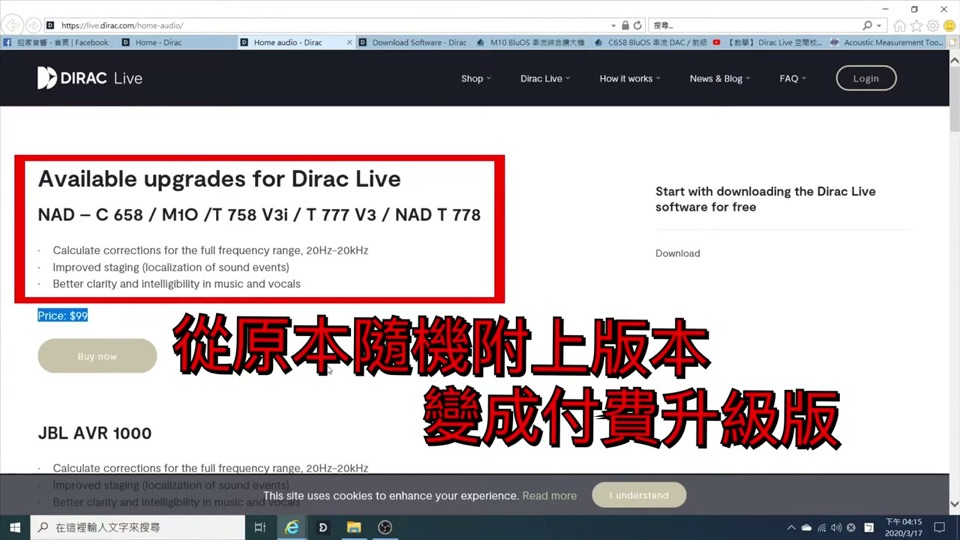
官網 $99 升級選項
免費版只校正 20 Hz–500 Hz（低頻段）；付 US$99 升級後，校正範圍變成 20 Hz–20 kHz（全頻段），並可外接更好的麥克風。
對認真調音色的人，全頻段升級才能連中高頻一起校正、也才用得到下面的曲線微調。
2
推薦麥克風 MiniDSP UMIK-1（約 US$75）
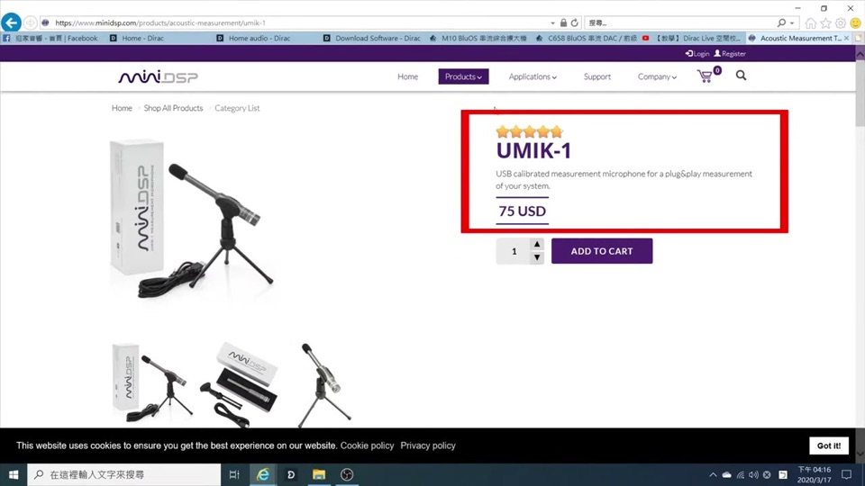
Dirac 官方推薦的 UMIK-1，約 US$75
麥克風生產有公差，官網可下載該支麥克風的校正檔，讓測量數值更準。
測量（與基礎篇相同，快速帶過）
3
開軟體、選裝置、載入麥克風校正檔
開啟 Dirac Live，裝置會出現在畫面正中央，點選它（本例 NAD N10/M10）。在麥克風上按右鍵 → Load from file 載入校正檔，下方頻率曲線就會顯示它做的補償。
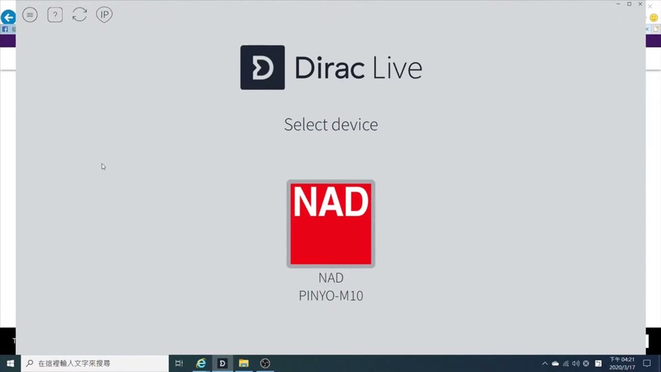
選擇 NAD 裝置
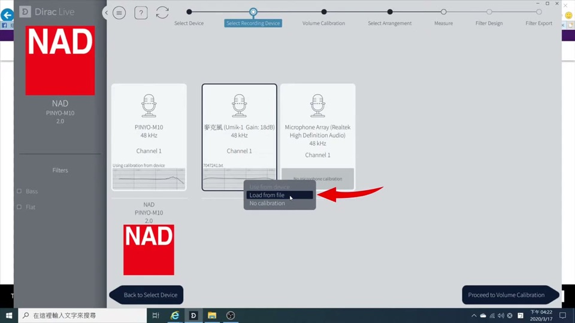
右鍵 Load from file 載入麥克風校正檔
4
調測量音量：綠色才 OK
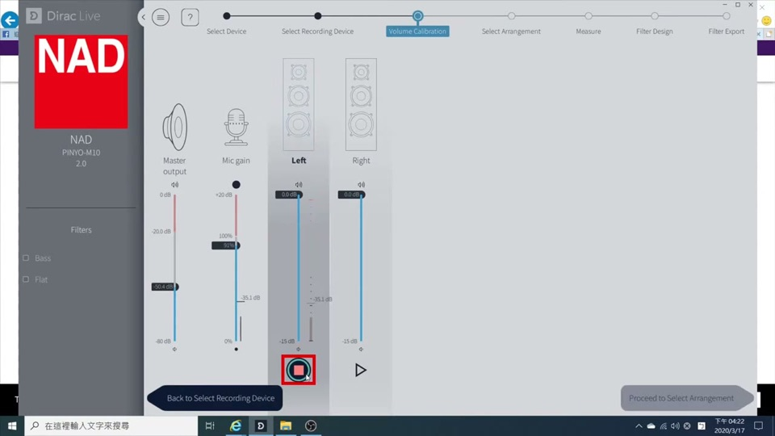
左＝擴大機音量、右＝麥克風靈敏度，音量條要進綠色
音量條要到綠色才 OK，紅色代表太大聲。環境吵→靈敏度調小＋擴大機開大；環境安靜→靈敏度開高＋擴大機關小。
5
皇帝位 vs 寬廣模式
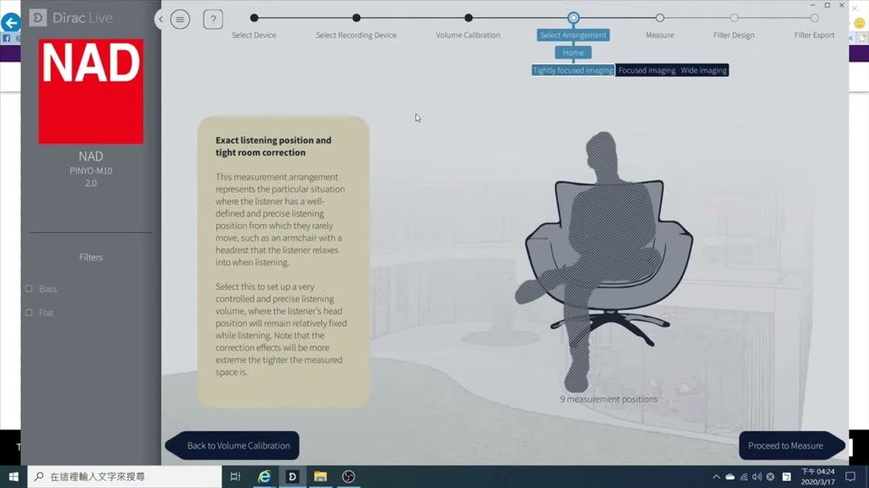
依聆聽範圍選皇帝位或寬廣模式
差別在測量點數：點越多、涵蓋區域越大，區域內音色越一致（方便從書桌走到沙發聲音都差不多）。單人聆聽選皇帝位即可。之後依指示完成多點測量（本例 8 點）。
核心：測完之後，曲線怎麼調
6
先看校正後的頻率曲線
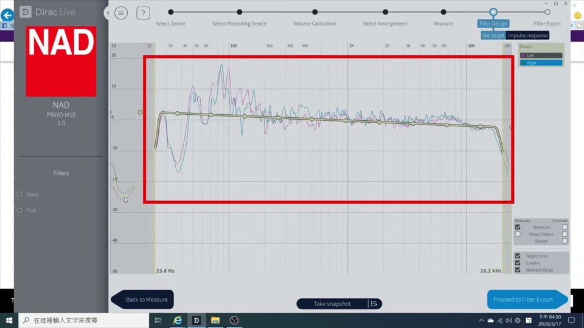
把左右聲道 group 起來，粗線＝校正後你會聽到的音色
把左右聲道群組（group）起來，畫面上較粗的線就是校正完後你實際會聽到的音色。
🎯
設定目標曲線：直接載入 StormAudio 官方曲線（推薦起點）
與其全部手動慢慢調，Dirac 支援直接載入現成的目標曲線（.targetcurve）。StormAudio 官方免費提供一組電影院取向的目標曲線，各廠牌 Dirac 通用、可直接匯入（含 Denon／Marantz）：
- 下載：StormAudio 官網 Tools & Guides 的
StormAudio-DL-Targets.zip，內含 3 條：
・LCR Cinema（前置 左中右）
・Surround Cinema（環繞、天空）
・Subwoofer Cinema（超低音）
- 匯入：在 Dirac「設定目標 / Set Target」頁，對每個聲道群組（group）按右鍵／載入 → 選對應的
.targetcurve 檔：
前置 → LCR｜環繞與天空 → Surround｜超低音 → Subwoofer
這是電影院取向——低頻飽滿、高頻自然滾降，看電影很讚。若你主要聽音樂，載入後可再照下面步驟微調高低頻，或另存一個自訂版對照聽。
7
為什麼校正後「低音變少」？（其實是變準）
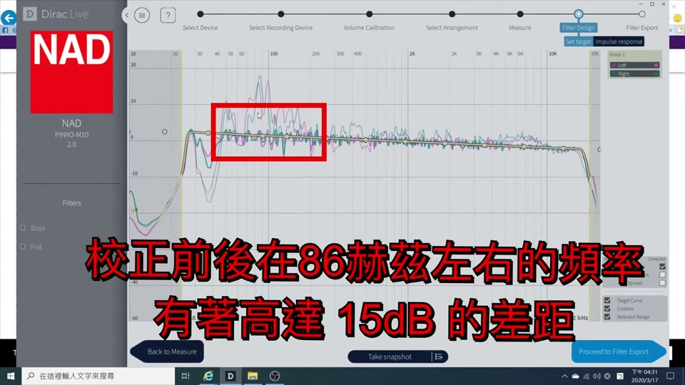
校正前在 86 Hz 附近比校正後高出十幾 dB
很多人反映校正後低頻變少。看圖：校正前在 86 Hz 附近比校正後高了十幾 dB，能量差很多。
那不是變少，是變平順、變準。以前的低音「很洶湧但含糊」，校正後是乾淨清晰的低頻。這是正常且正確的結果。
8
想要低音更有力：在對的頻率做突起
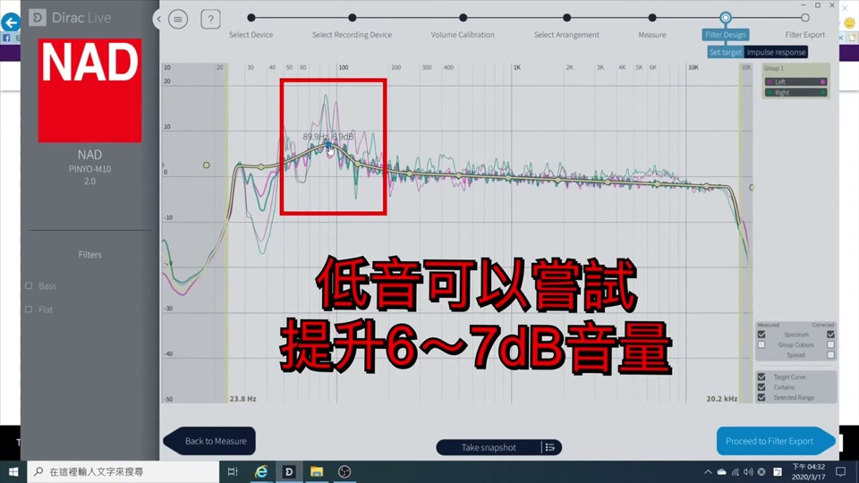
小書架喇叭可在 80 Hz 做 6–7 dB 突起
若嫌低頻力度不夠，可在曲線上做突起——但要看喇叭的低音能力：
- 小書架喇叭：在 80 Hz 做 +6～7 dB 突起，就很有感
- 喇叭低頻只到 60–70 Hz：別在 30 Hz 做突起，喇叭根本發不出來，白調
想還原？按重置鍵就回到原始數值。
9
覺得不夠亮／人聲不夠突出：調中高頻
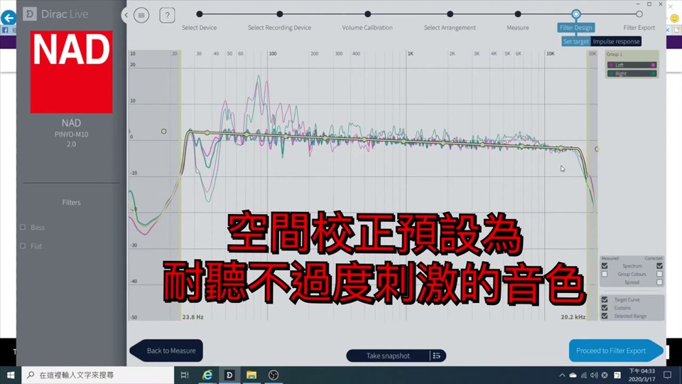
Dirac 預設會把高頻適度衰減以減少長聽疲勞
校正預設會把高音適度衰減（1 kHz 之後有一點下斜），讓長時間聆聽不疲勞。若你喜歡明亮、銳利的音色：
- 把 1 kHz 之後那段拉回 0 dB
- 在 1 kHz 做 +2～3 dB 突起 → 人聲更明顯
- 在 5 kHz 做 +2～3 dB 突起 → 空間感更好、音色更現代銳利
存檔與套用
10
存多組音色預設（依音樂類型切換）
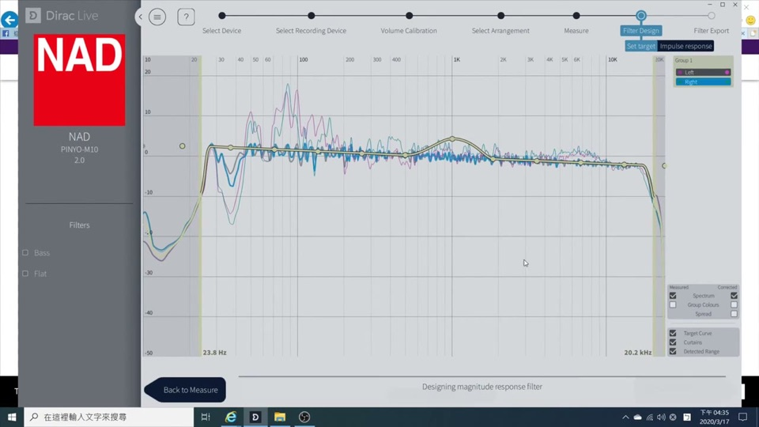
NAD N10 可存 5 組音色預設，命名 Test1/Test2…
NAD N10 可存 5 組音色預設，可針對不同音樂類型各調一套，命名後儲存（如 Test1、Test2）。
11
務必存原始專案（Save Project）
量好資料後，左上角三橫槓 → Save Project 把原始測量存起來。之後想改數值，用 Load Project 叫回原始資料即可，不必重新測量一次。
12
在 BluOS 選用你調好的預設
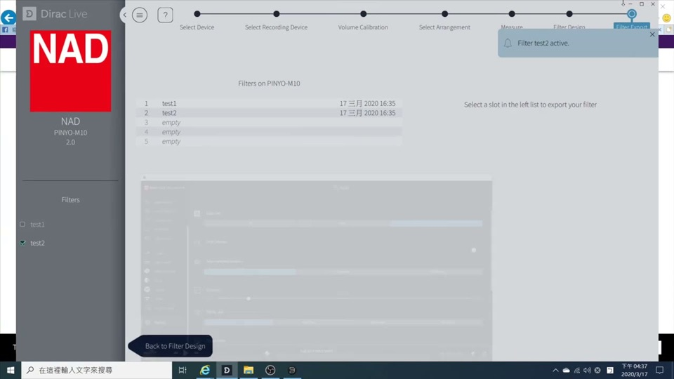
BluOS → Audio Settings 選 Test1／Test2
進 BluOS，在機器設定旁就有 Dirac 空間校正選項（Audio Settings），選擇你存好的 Test1／Test2 即可。
▶ 觀看原始影片（迎家音響）工具版本：2026-07-25（新增「設定目標曲線：載入 StormAudio 官方曲線」段）